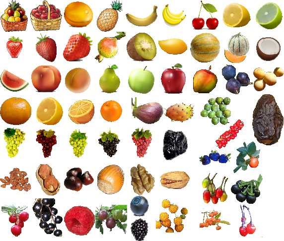
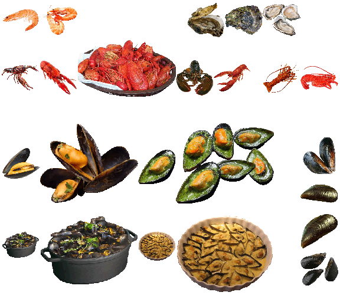
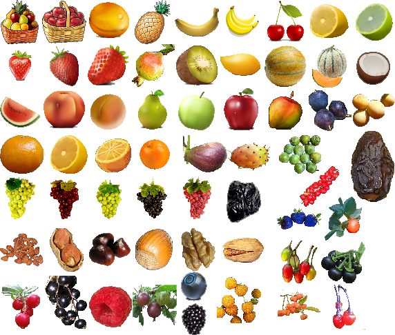
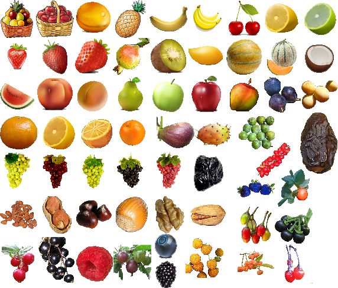

Menace sur le royaume de Diamant Éternel est un mod français conçu à la frontière entre une conversion totale et une énorme quête. Une minuscule partie se situe dans BG2 Les Ombres d'Amn, mais l'essentiel se déroule dans l'extension Trône de Bhaal.
Vous avez tous adoré Excalibur, mais vous êtes-vous jamais demandé pourquoi les seules femmes présentes y sont nuisibles ? Guenièvre l'adultère, Morgane la méchante... Pourquoi les Ordres de Paladins ne comportent-ils que des hommes ?
Et si tout ceci n'était qu'une fable racontée par les hommes pour dissimuler la vérité ?
Ce mod tente de rétablir la vérité, du moins SA VÉRITÉ...
L'aventure se déroule dans une dimension parallèle, à la fois « proche » et « éloignée » de Féérûne, plus précisément dans le Royaume de Diamant Éternel, un royaume dirigé par une dynastie de rois-paladins que tente de renverser une paladine renégate. Cette dernière a passé un pacte plutôt spécial avec des « forces » pour le moins particulières...
Le royaume tire sa richesse de ses mines et sa puissance de la protection que lui a toujours accordée le dragon d'argent Diamantor, considéré par certains comme un demi-dieu...
Votre mission, si toutefois vous l'acceptez, est de sauver le Royaume de Diamant Éternel.
Qui l'eut cru ? Plutôt original, non ? 😝
Pour cela, vous devrez affronter une redoutable coalition formée par un Ordre de paladins félons pour le moins « dévoyés », une guilde d'assassins kamikazes et une compagnie de tueurs de magiciens (et oui, mauvais temps pour les amateurs des arcanes...).
Mais pas que... Il vous faudra aussi affronter une secte secrète, la Société des Crocs de Tiamat, et ses minions aux puissants pouvoirs de destruction. Libre à vous de choisir comment vous réglerez ces rencontres : avec la manière forte (à vos risques et périls) ou de manière plus subtile.
Je me suis en effet efforcé d'offrir autant que possible la possibilité de jouer cette aventure et d'accomplir ses quêtes sans avoir à combattre. Je préfère donc vous prévenir : les créatures que vous rencontrerez sont extrêmement puissantes. Alors, ne venez pas vous plaindre si vous préférez systématiquement les défier. 😉
Menace sur le Royaume de Diamant Éternel > Introduction • HAUT DE PAGE
Compatibilité
Jeux concernés
Ce mod est conçu pour fonctionner sur les jeux Infinity Engine suivants :
Baldur's Gate II: Enhanced Edition (BG2EE).
Le jeu original Baldur's Gate II (Les Ombres d'Amn : BG2-SoA) avec son extension Trône de Bhaal (Throne of Bhaal : ToB). Assurez-vous que l'extension Trône de Bhaal dispose bien du patch 26498. Vérifiez le numéro de cette version dans le fichier readme de votre répertoire de jeu, et consultez éventuellement le site de BioWare.
Menace sur le Royaume de Diamant Éternel est un mod WeiDU et devrait par conséquent être compatible avec n'importe quel mod WeiDU. Je ne peux cependant pas tous les tester. Si vous rencontrez des bugs, veuillez les signaler dans le forum, s'il vous plaît.
Bien que je m'efforce de rendre Menace sur le Royaume de Diamant Éternel compatible avec le plus grand nombre possible de mods, des incompatibilités risquent toujours de se produire. Voici la liste de celles recensées jusqu'à présent :
Kit Revisions : ce mod modifiant les capacités spéciales des kits originaux du jeu, il est par conséquent incompatible avec tous les mods utilisant la définition initiale de ces capacités.
...
Ordre d'installation
➽ Si vous jouez avec BG2-ToB ou BGT, je vous recommande fortement d'installer la dernière version du BG2 Fixpack et Throne of Bhaal Extender avant d'installer ce mod.
De plus, Menace sur le Royaume de Diamant Éternel a été conçu pour exploiter les possibilités de modding offertes par les mods graphiques Infinity Animations et One Pixel Productions. Il ne s'installera pas s'il ne les détecte pas car il ne pourra pas installer les animations de licornes et de chevaux.
Menace sur le Royaume de Diamant Éternel > Compatibilité • HAUT DE PAGE
Installation
Mise en garde
Si une ancienne version de ce mod est déjà installée, il est nécessaire de la désinstaller d'abord. Pour cela, lancez setup-diamant_eternel.exe (ou .command si vous êtes sousOS X)) et désinstallez tous les composants précédemment installés. Une fois la désinstallation achevée, supprimez le répertoire 📁 diamant_eternel et le fichier setup-diamant_eternel.exe (version Windows) avant d'extraire la nouvelle version du mod.
Lorsque vous installez ou désinstallez, ne fermez pas la fenêtre DOS en cliquant sur le bouton X ! Au lieu de cela, appuyez sur la touche Entrée lorsque l'invite de commandes vous le demande.
Par précaution, désactivez les antivirus ou tout logiciel résidant en mémoire avant d'installer ce mod, ou tout autre mod. Certains (en particulier avast et Norton !) ont une fâcheuse tendance à déclarer les exécutables des mods comme des faux positifs, provoquant ainsi l'échec de la procédure d'installation.
Note pour les jeux en Édition Améliorée (EE)
Les Éditions améliorées sont des jeux que le développeur fait encore évoluer, notamment par l'ajout de capacités supplémentaires destinées à la création de mods et par l'ajout de contenus. N'oubliez pas que chaque patch de mise à jour effacera les mods que vous avez installés ! Ce mod ne fera pas exception à la règle.
Si vous pouvez retarder la mise à jour du patch en plein milieu d'un partie moddée (si vous en avez la possibilité, notamment chez Beamdog et Good Old Games), n'oubliez pas que même après avoir réinstallé les mods sur un nouveau patch, vous ne pourrez peut-être pas continuer le jeu avec vos anciennes sauvegardes, en particulier à cause de noms de personnages, de lieux, etc, qui pourraient être incorrects. Pour y remédier, copiez tout le dossier du jeu dans un nouveau dossier dans lequel vous installerez vos mods, et qui ne sera pas modifié par les patches de mise à jour. Il est important que vous installiez le mod dans la version linguistique dans laquelle vous jouez. Sinon, les dialogues du mod ne s'afficheront pas et provoqueront des messages d'erreur.
Windows
Menace sur le Royaume de Diamant Éternel pour Windows est livré et installé avec WeiDU, et est diffusé sous forme d'archive.
Vous devez extraire les fichiers de l'archive dans votre répertoire de jeu (le dossier qui contient le fichier CHITIN.KEY) à l'aide de 7zip ou de WinRAR. Une fois l'archive extraite correctement, vous devriez trouver le répertoire 📁 diamant_eternel et le fichier setup-diamant_eternel.exe dans votre répertoire de jeu. Pour installer le mod, il suffit de double-cliquer sur setup-diamant_eternel.exe et de suivre les instructions affichées à l'écran.
Vous pouvez lancer setup-diamant_eternel.exe dans votre répertoire de jeu pour réinstaller, désinstaller, ou encore changer des composants.
Mac OS X
⚠️ Malheureusement, ce mod n'est pour l'instant pas compatible avec le système d'exploitation OS X car il doit être installé après Infinity Animations dont la procédure de modification de l'exécutable ne fonctionne pas sur OS X.
Cependant, comme les jeux EE ne nécessitent pas un patch de leur exécutable pour bénéficier des composants de Infinity Animations, Menace sur le Royaume de Diamant Éternel peut y être installé sur un système d'exploitation Mac.
Ainsi, Menace sur le Royaume de Diamant Éternel pour EE pour Mac OS X est livré avec WeiDU, et est diffusé dans la même archive compressée.
Extrayez le contenu de l'archive dans votre répertoire de jeu. Après une extraction réussie, ce dernier contiendra les fichiers setup-diamant_eternel, setup-diamant_eternel.command, et le répertoire 📁 diamant_eternel. Pour installer, il suffit de double-cliquer sur setup-diamant_eternel.command et de suivre les instructions affichées à l'écran.
Vous pouvez lancer setup-diamant_eternel.command dans votre répertoire de jeu pour réinstaller, désinstaller ou changer des composants.
Linux
Menace sur le Royaume de Diamant Éternel pour Linux est diffusé dans la même archive compressée, mais sans l'installateur WeiDU.
Extrayez le contenu du mod dans le répertoire du jeu que vous voulez moder.
Téléchargez la version la plus récente de WeiDU pour Linux sur WeiDU.org et copiez weidu, weinstall et tolower dans /usr/local/bin . Ouvrez ensuite un terminal et allez ( cd ) dans le répertoire d'installation de votre jeu, lancez tolower et répondez « Y » aux deux questions. Vous pouvez éviter d'exécuter la seconde option (Linux.ini) si vous l'avez déjà lancée une fois dans le même dossier. Pour gagner du temps, l'archive est déjà passée en minuscules, aussi il n'est pas non plus nécessaire d'exécuter la première option (passer les noms de fichiers en minuscules) si vous n'avez extrait que ce mod depuis la dernière fois que vous avez passé les noms de fichiers en minuscules. Si vous avez un doute, il vaut mieux exécuter tolower et accepter les deux options.
Lancez weinstall setup-diamant_eternel depuis le dossier de votre jeu pour installer le mod. Puis, lancez wine bgmain.exe (ou wine baldur.exe pour les versions EE) et commencez à jouer.
Note pour effectuer une désinstallation complète
En plus des méthodes détaillées plus haut pour supprimer des composants, il est possible de désinstaller complètement le mod en tapant setup-diamant_eternel --uninstall dans une ligne de commandes, ce qui supprimera tous les composants sans devoir ingurgiter tous les messages.
⚠️ Avertissement : procédure d'installation
Les options de configuration nécessaires à l'installation sont lues dans le fichier diamant_eternel-config-default.ini, ou dans le fichierdiamant_eternel-config-user.ini, si ce dernier existe.
Pour éviter d'interrompre la procédure d'installation par de nombreux messages vous permettant de personnaliser certains composants à votre convenance (ce qui n'est pas compatible avec la plupart des utilitaires d'installation automatique de mods), ces options ont été externalisées dans le fichier diamant_eternel-config-default.ini situé dans le répertoire 📁 diamant_eternel. Ce fichier définit une installation « standard ».
Si vous souhaitez choisir d'autres options d'installation, il vous suffit de modifier, avec Notepad ou un autre éditeur de texte, les options de configuration dans le fichier diamant_eternel-config-default.ini, puis de sauvegarder ce dernier sous le nom diamant_eternel-config-user.ini.
Chaque ligne de ce fichier comprend une option de configuration, suivie de « = », puis d'un chiffre ou d'une chaîne de caractères. Tout ce que vous avez à faire, c'est modifier la valeur du chiffre ou de la chaîne.
Le programme d'installation lira les valeurs des variables dans les deux fichiers .ini et donnera la priorité aux vôtres. Si le fichier diamant_eternel-config-user.ini contient une variable non conforme, ou si une variable est manquante, il la remplacera par sa valeur par défaut (celle correspondant à l'installation « standard »).
Voici le tableau des options concernées :
Option
Signification
Type
Valeurs possibles
Défaut
gw_unicorn_name
Le nom que vous souhaitez donner à votre licorne.
alphanumérique
un nom !
Flèche d'argent
gw_destrier_name
Le nom que vous souhaitez donner à votre destrier de paladin
alphanumérique
un nom !
Diamant noir
gw_language_bam
Définit la langue dans laquelle vous souhaitez installer les fichiers BAM d'information :
- AUTO = Langue d'installation - FR = français - US = anglais - DE = allemand - IT = italien - RU = russe - ES = espagnol
alphanumérique
AUTO, FR, US, DE, IT, RU ou ES
AUTO
gw_mos_mosaic
à définir
numérique
0 ou 1
0
gw_seagull
Variable modifiable uniquement pour les jeux classiques.
Installe une nouvelle animation de goéland qui écrase l'animation de mouette du jeu.
Note pour les jeux EE : comme le moteur du jeu permet d'ajouter des animations de créatures volantes, cette variable est automatiquement paramétrée à 1 pour que toutes les moeuttes des cartes de ce module puisse en bénéficier.
numérique
0 ou 1
1
Menace sur le Royaume de Diamant Éternel > Installation • HAUT DE PAGE
Composants
Le programme d'installation comprend les composants suivants. Chacun possède un numéro distinct et pré-défini qui lui attribue une position déterminée (mot-clé 'DESIGNATED' en langage WeiDU) ; ce qui permet aux autres composants et aux autres mods de le détecter et aux utilitaires d'installation automatique de préciser quels composants installer.
[100]Composant principal
➽ TODO Description du composant.
[200]Composant optionnel : Gestion de la nourriture
➽ TODO Description du composant.
Menace sur le Royaume de Diamant Éternel > Composants • HAUT DE PAGE
Captures d'écran
Composant nourriture
1. Il faudra collecter de la nourriture...

... la chasser, ou la pêcher...
...réunir des épices
2. Pour les cuisiner

3. Le tout accompagné de petits plaisirs
Menace sur le Royaume de Diamant Éternel > Captures d'écran • HAUT DE PAGE
Dépannage
Si vous rencontrez un bogue, veuillez en informer l'auteur dans le forum Menace sur le Royaume de Diamant Éternel. Par ailleurs, Menace sur le Royaume de Diamant Éternel est disponible sur GitHub, où la communauté peut soumettre des correctifs et des modifications.
Voici quelques astuces classiques si vous rencontrez des problèmes pour faire fonctionner le jeu, avec ou sans ce mod (ou d'autres mods). Les erreurs sont souvent causées par le moteur du jeu lui-même, la manière d'installer jeu et mods, ou encore la façon de jouer. Avant d'essayer quoi que ce soit d'autre, il est recommandé de supprimer tous les fichiers des sous-répertoires 📁 /cache, /temp et /tempsave dans le répertoire du jeu pour voir si cela résout le problème.
Symptôme : le jeu se bloque ou provoque un retour sur le bureau de Windows
Quand ceci se produit, le jeu affiche parfois une erreur d'assertion (« assertion error ») dans une fenêtre pop-up, mais ce n'est pas toujours le cas. Pour que le message d'erreur complet s'affiche, ouvrez le fichier baldur.ini (qui se trouve dans le répertoire du jeu) avec un éditeur de texte (comme Notepad ou le bloc-notes). Si vous êtes sous Windows Vista, ou un système d'exploitation plus récent, et n'arrivez pas à éditer ce fichier ou à sauvegarder vos modifications, consultez ce sujet pour de plus amples informations. Vous pouvez aussi consulter cette FAQ en français.
Dans la section [Program Options] de ce fichier, tapez Logging On=1 (à moins que cette instruction ne soit déjà présente). Il est également intéressant de vérifier que l'instruction Debug Mode=1 est bien présente, ce qui permet d'activer la Console CLUA pour déboguer et effectuer des tests. Sauvegardez le fichier et refermez-le. Lancez à nouveau le jeu et tentez de reproduire l'erreur. Cherchez ensuite dans le répertoire du jeu le fichier Baldur.err et ouvrez-le avec un éditeur de texte pour analyser son contenu.
Symptôme : le jeu crashe sans produire de logs dans le fichier Baldur.err, et affiche soit un écran noir, soit une fenêtre pop-up indiquant une erreur à l'offset 005ca8a8 [adresse]
Ce message indique généralement un problème lié à une animation. Assurez-vous d'avoir installé la version la plus récente du mod. Si vous avez installé d'autres mods après celui-ci et rencontrez ce problème, installez le correctif disponible ici.
Symptôme :
ERROR: error copying [infinityanimations/content/somefile.bam]
ERROR: [SOMEFILE.CRE] -> [override/SOMEFILE.CRE] Patching failed (COPY)
Stopping installation because of error.
(with no other error message)
Ce genre de messages dépourvus de valeur informative peuvent indiquer que vous installez le mod sur un disque dur avec un faible taux de transfert de données, ou qu'un programme antivirus est actif pendant l'installation (ce qui peut aussi affecter le transfert de données). Essayez d'installer le mod sur un disque dur interne en vous assurant que la protection antivirus est désactivée pendant l'installation. Si vous n'en êtes pas certain.e, déconnectez-vous d'internet pendant l'installation (soit en débranchant votre cable, soit en déconnectant votre adaptateur wifi) et fermez tous les programmes résidant en mémoire pendant l'installation. Pour en obtenir la liste, allez dans Démarrage > Exécutez, et tapez msconfig là où est indiqué « Ouvrir : ». Cliquez ensuite sur OK. Quand l'utilitaire de configuration du système apparaît, cliquez sur le bouton de démarrage. Les seuls programmes qu'il est vraiment nécessaire de charger en mémoire au démarrage sont ceux liés à votre puce graphique (typiquement ATI ou NVIDIA). Décochez tout le reste, redémarrez et essayez d'installer à nouveau le mod. Il existe une abondante littérature sur des problèmes liés à l'installation de mods quand l'antivirus Avast est activé, alors assurez-vous bien que tous les composants d'Avast sont complètement désactivés.
Autres problèmes
Si vous avez installé plus d'un « mégamod », veuillez consulter la FAQ sur les mégamods pour y trouver des informations supplémentaires de dépannage.
Si rien de tout ceci ne résout votre problème, ou si votre problème est lié à un mod spécifique, merci de le signalez dans le forum du mod. Incluez dans votre message le contenu du fichier WeiDU.log (mis entre les balises [spoiler][/spoiler] s'il vous plaît !), ou attachez-le en pièce jointe au message s'il est trop volumineux.
Menace sur le Royaume de Diamant Éternel > Dépannage • HAUT DE PAGE
Isaya pour son aide précieuse, ses suggestions et son soutien constant dans le codage des points critiques.
deratiseur pour ses conseil dans la création des kits.
Luren pour son aide sans failles dans la réalisation d'éléments graphiques. Sans lui, vous ne pourriez pas emprunter d'ascenseur, ni combattre de tarasques, car elles n'auraient jamais vu le jour.
Cocrane pour sa recherche d'éléments graphiques à intégrer dans le mod, ainsi que la conception de la carte du Col du Dragon.
Graoumf et Lulubaleyette pour la relecture.
machin pour m'avoir donné la permission d'utiliser blabla.
trucmuche pour son aide dans le codage et ses suggestions.
...
xxx pour la traduction anglaise.
Merci aux artistes de portraits du site Pinterest.
Menace sur le Royaume de Diamant Éternel n'est pas développé, supporté ni approuvé par BioWare™ ou Interplay/Black Isle, Overhaul, Beamdog ou Wizards of the Coast. Il a été développé par Freddy_Gwendo (aka Gwendolyne), et est basé sur le jeu Baldur's Gate II et son extension ToB.
Ce mod a été créé pour être librement apprécié par tous les joueurs de Baldur's Gate II. Cependant, il ne doit pas être vendu, publié, compilé, hébergé ou redistribué sous une forme quelconque sans le consentement de son auteur.
S'il existe des problèmes de droits d'auteur ou si cette déclaration nécessite une révision, veuillez me contacter et conseillez-moi sur ce qu'il faut faire à ce sujet. Plus particulièrement, si vous trouvez dans ce mod des illustrations susceptibles d'être en conflit avec les règles de droit d'auteur, merci de bien vouloir me le faire savoir dès que possible et je supprimerai immédiatement le contenu en conflit.
➽ Et surtout, n"oubliez jamais :
La communauté de modding sur le moteur Infinity Engine a été très active depuis plus de quinze ans maintenant, et a produit des milliers d'heures de travail non rémunérées effectuées par des fans du jeu. Les moddeurs s'efforcent de publier le meilleur de leur travail, et les joueurs bénéficient des mods les plus performants et les mieux maintenus, à condition que nous travaillions tous dans le même sens.
Mais cette harmonie peut malheureusement être perturbée, principalement par deux comportements. Le premier, c'est de revendiquer le travail de quelqu'un d'autre. Le second consiste à héberger et à redistribuer un mod sans la permission de son(es) auteur(s).
Soyez assez sympa avec vos collègues joueurs et moddeurs. Ne le faites pas. 😉
Menace sur le Royaume de Diamant Éternel > Crédits et remerciements • HAUT DE PAGE
Historique des versions
Version Alpha 0.0.1 (date)
Sortie initiale.
Menace sur le Royaume de Diamant Éternel > Historique des versions • HAUT DE PAGE


 
